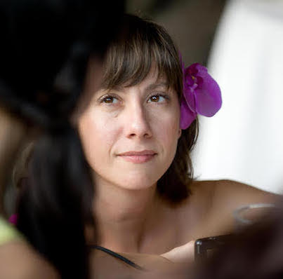

HI, I'M STACY
I’m the owner of Teacup Woozy, a personalized travel planning company, and I started this business because over the years I have seen too many people get caught up and overwhelmed with trying to plan a “perfect” trip. Because of time constraints or feeling overwhelmed, they’d end up losing sight of why they wanted to travel in the first place. And, they’d frequently end up disappointed with how their trip turned out.
This is where I can step in and help you.
I believe that we can all have amazing travel experiences: perfect lodgings, delicious meals, do and see things that are totally amazing to you. And, most importantly, I love helping people to have those extraordinary trips - I really care about my clients and I want you to have the kind of travel that makes you thrilled to be alive!
I have been planning travel all around the world - for myself, for friends, and for family - for more than thirteen years.
I’ve sorted through all the details and planned some really incredible trips: six-months backpacking across Europe, a long weekend in Estonia with a day trip over to Finland, three weeks in Iceland (before Iceland was cool!) foodie-centric trips to Mexico (with cooking classes, market tours, and some truly delicious street food!), and three weeks in China!
I also believe that travel and experiencing other cultures make us better global citizens.
Travel is my passion and helping others to do it is an honor.
You can keep scrolling to see some of my favorite travel moments and then head on over to my Services page to read more about how I can help you to have wonderful travel experiences.
My favorite meal
A four-course feast at a perfect little traditional bistro in the 12th arrondissement in Paris. It was there that I also started my love affair with Armagnac. The bistro isn't too expensive and the memories of eating there will last a lifetime. Let me know if you’re planning a trip to Paris and I can tell you where this little gem is.
My favorite off the beaten path moment
It might have been when I accidentally hitchhiked after only having been in Mexico for a few hours. I truly didn’t mean to hitchhike at that moment, but when you’re somewhat stranded out in the countryside and a woman your mom’s age pulls over on the side of the road next to where you’re standing and asks ¿Dónde va? You tell her and then you hop in.
My favorite “normal life” activity to do in other countries
I love going to the movies in other countries. I’ve lost count of how many movies I’ve seen while traveling, but over the years I’ve learned there are all sorts of different customs and norms when it comes to watching movies around the world. And, different snacks too! Some of my more memorable movie experiences have been a raunchy American comedy in Poland, a tear-jerker sister flick in Melbourne, a British indie film in Mexico, and days upon days of films at the Berlin Film Festival!
The most ambitious time zone hopping
After having spent 10 days in London, I flew to Seattle for two days, and then onto Maui for a week, and then back to Seattle.
Most unusual method of transportation
I once crossed a frozen sea in an icebreaker ship.
My favorite place to sleep when traveling
Trains! Stick me on a train and I’m out like a light within a few minutes.